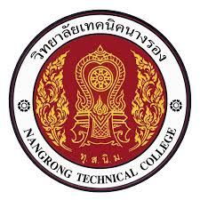
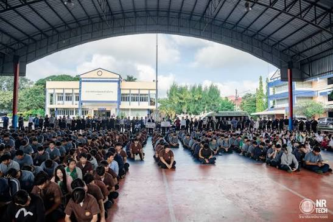
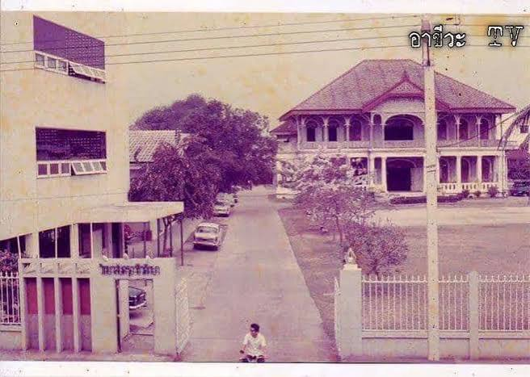

Nangrong Technical College

วิทยาลัยเทคนิคนางรอง ได้รับการจัดตั้งขึ้นโดยกระทรวงศึกษาธิการ เพื่อขยายโอกาสทางการศึกษาวิชาชีพแก่เยาวชนและประชาชนในอำเภอนางรองและพื้นที่ใกล้เคียงในจังหวัดบุรีรัมย์
วิทยาลัยเปิดทำการสอนครั้งแรกเมื่อวันที่ 18 พฤษภาคม พ.ศ. 2538 ในระดับหลักสูตรประกาศนียบัตรวิชาชีพ (ปวช.) โดยในระยะเริ่มต้นเปิดสอน 3 แผนกวิชา ได้แก่ แผนกวิชาช่างไฟฟ้ากำลัง แผนกวิชาช่างอิเล็กทรอนิกส์ และแผนกวิชาการบัญชี

ต่อมาวิทยาลัยได้พัฒนาหลักสูตร ปรับปรุงอาคารสถานที่ เครื่องมือการเรียนการสอน และขยายสาขาวิชาครอบคลุมทั้งสายช่างอุตสาหกรรม พาณิชยกรรม และเทคโนโลยีสารสนเทศ ทั้งในระดับ ปวช. และ ปวส. เพื่อรองรับความต้องการของตลาดแรงงานในปัจจุบัน